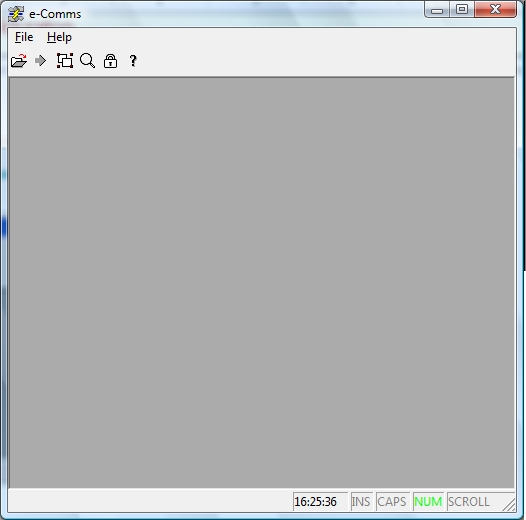
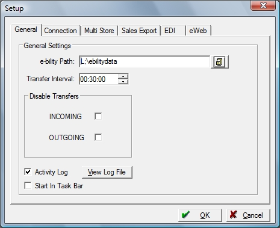
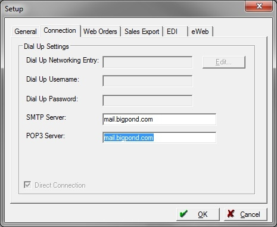
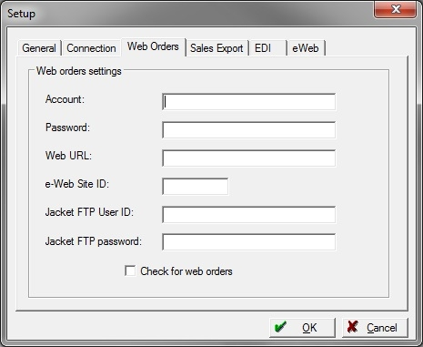
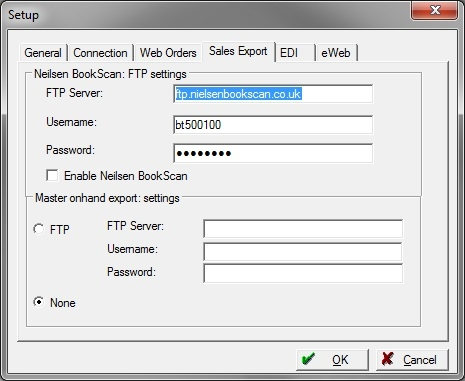
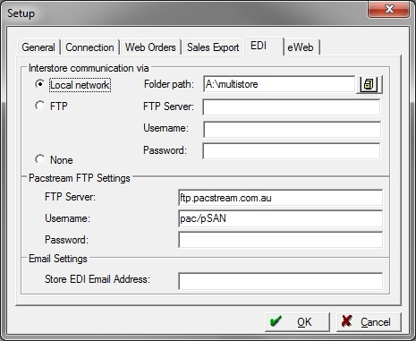
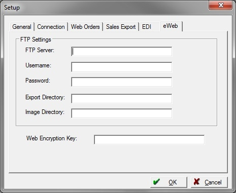

|
e-Comms Configuration
|
Previous Top Next |
| · | Internet access at each location. Either by dial-up or direct connection via ADSL, Cable, Wide-Area Network, etc.
|
| · | A dedicated email address for each site location. These email addresses will be used purely for the transfer of multi-store data and must be separate from the email addresses used for email correspondence.
|
| · | Made up codes (typically non-book product) have to standardized across all locations.
|
| · | 2 character store (or location) codes allocated to each store and defined at all locations. This is important for the Bookscan configuration steps 2 and 5.
|





| · | Local network : Type in Folder Path or browse (yellow icon) to select the shared folder that all sites can see. This folder location is where both sites will be placing and retrieving their files from.
|
| · | FTP : When selected, then fill in the FTP server address, Username and Password for access to that server. The FTP server must be the same for all sites.
|
| · | None: No interstore communication.
|

